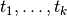
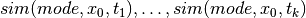
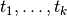
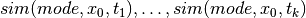
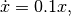
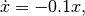
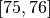
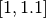
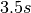
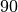

DryVR’s Language¶
In DryVR, a hybrid system is modeled as a combination of a white-box that specifies the mode switches (Transition Graph) and a black-box that can simulate the continuous evolution in each mode (Black-box Simulator).
Black-box Simulator¶
The black-box simulator for a (deterministic) takes as input a mode label, an initial state  , and a finite
sequence of time points , and returns a sequence of
states 
as the simulation trajectory of the system in the given mode starting from at the time points .
, and a finite
sequence of time points , and returns a sequence of
states 
as the simulation trajectory of the system in the given mode starting from at the time points .
DryVR uses the black-box simulator by calling the simulation function:
TC_Simulate(Modes,initialCondition,time_bound)
Given the mode name “Mode”, initial state “initialCondition” and time horizon “time_bound”, the function TC_Simulate should return an python array of the form:
[[t_0,variable_1(t_0),variable_2(t_0),...],[t_1,variable_1(t_1),variable_2(t_1),...],...]
We provide several example simulation functions and you have to write your own if you want to verify systems that use other black-boxes. Once you create the TC_Simulate function and corresponding input file, you can run DryVR to check the safety of your system. To connect DryVR with your own black-box simulator, please refer to section Advanced Tricks: Verify your own black-box system for more details.
Transition Graph¶
{kind=link}
The transition of Automatic Emergency Braking (AEB) system
A transition graph is a labeled, directed acyclic graph as shown on the right. The vertex labels (red nodes in the graph) specify the modes of the system, and the edge labels specify the transition time from the predecessor node to the successor node.
The transition graph shown on the right defines an automatic emergency braking system. Car1 is driving ahead of Car2 on a straight lane. Initially, both car1 and car2 are in the constant speed mode (Const;Const). Within a short amount of time ([0,0.1]s) Car1 transits into brake mode while Car2 remains in the cruise mode (Brk;Const). After [0.8,0.9]s, Car2 will react by braking as well so both cars are in the brake mode (Brk;Brk).
The transition graph will be generated automatically by DryVR and stored in the tool’s root directory as curgraph.png
Input Format¶
The input for DryVR is of the form
{
"vertex":[transition graph vertex labels (modes)]
"edge":[transition graph edges, (i,j) means there is a directed edge from vertex i to vertex j]
"variables":[the name of variables in the system]
"guards":[transition graph edge labels (transition condition)]
"resets":[reset condition after transition] # This is optional if you do not want reset
"initialMode":[label for initial mode] # This is optional for DAG graph
"initialSet":[two arrays defining the lower and upper bound of each variable]
"unsafeSet":@[mode name]:[unsafe region]
"timeHorizon":[Time bound for the verification]
"directory": directory of the folder which contains the simulator for black-box system
}
Example input for the Automatic Emergency Braking System
{
"vertex":["Const;Const","Brk;Const","Brk;Brk"],
"edge":[[0,1],[1,2]],
"variables":["car1_x","car1_y","car1_vx","car1_vy","car2_x","car2_y","car2_vx","car2_vy"],
"guards":[
"And(t>0.0,t<=0.1)",
"And(t>0.8,t<=0.9)"
],
"initialSet":[[0.0,0.5,0.0,1.0,0.0,-17.0,0.0,1.0],[0.0,1.0,0.0,1.0,0.0,-15.0,0.0,1.0]],
"unsafeSet":"@Allmode:And(car1_y-car2_y<3, car2_y-car1_y<3)",
"timeHorizon":5.0,
"directory":"examples/cars"
}
Output Interpretation¶
The tool will print background information like the current mode, transition time, initial set and discrepancy function information on the run. The final result about safe/unsafe will be printed at the bottom.
When the system is safe, the final result will look like
System is Safe!
When the system is unsafe, the final result will look like
Current simulation is not safe. Program halt
If the simulation result is not safe, the unsafe simulation trajectory will be stored in “Traj.txt” in the output folder. Otherwise the last simulation result will be stored in “Traj.txt”.
Advanced Tricks: Verify your own black-box system¶
We use a very simple example of a thermostat as the starting point to show how to use DryVR to verify your own black-box system.
The thermostat is a one-dimensional linear hybrid system with two modes “On” and “Off”. The only state variable is the temperature  . In the “On” mode, the system dynamic is
. In the “On” mode, the system dynamic is

and in the “Off” mode, the system dynamic is

As for DryVR, of course, all the information about dynamics is hidden. Instead, you need to provide the simulator function TC_Simulate as discussed in Black-box Simulator.
Step 1: Create a folder in the DryVR root directory for your new model and enter it.
cd examples
mkdir Thermostats
cd Thermostats
Step 2: Inside your model folder, create a python script for your model.
touch Thermostats_ODE.py
Step 3: Write the TC_Simulate function in the python file Thermostats_ODE.py.
For the thermostat system, one simulator function could be:
def thermo_dynamic(y,t,rate):
dydt = rate*y
return dydt
def TC_Simulate(Mode,initialCondition,time_bound):
time_step = 0.05;
time_bound = float(time_bound)
initial = [float(tmp) for tmp in initialCondition]
number_points = int(np.ceil(time_bound/time_step))
t = [i*time_step for i in range(0,number_points)]
if t[-1] != time_step:
t.append(time_bound)
y_initial = initial[0]
if Mode == 'On':
rate = 0.1
elif Mode == 'Off':
rate = -0.1
else:
print('Wrong Mode name!')
sol = odeint(thermo_dynamic,y_initial,t,args=(rate,),hmax = time_step)
# Construct the final output
trace = []
for j in range(len(t)):
tmp = []
tmp.append(t[j])
tmp.append(sol[j,0])
trace.append(tmp)
return trace
In this example, we use odeint simulator from Scipy, but you use any programming language as long as the TC_Simulate function follows the input-output requirement:
TC_Simulate(Mode,initialCondition,time_bound)
Input:
Mode (string) -- a string indicates the model you want to simulate. Ex. "On"
initialCondition (list of float) -- a list contains the initial condition. Ex. "[32.0]"
time_bound (float) -- a float indicates the time horizon for simulation. EX. '10.0'
Output:
Trace (list of list of float) -- a list of lists contain the trace from a simulation.
Each index represents the simulation for certain time step.Represents as [time, v1, v2, ........].
Ex. "[[0.0,32.0],[0.1,32.1],[0.2,32.2]........[10.0,34.3]]"
Step 4: Inside your model folder, create a Python initiate script.
touch __init__.py
Inside your initiate script, import file with function TC_Simulate.
from Thermostats_ODE import *
Step 5: Go to inputFile folder and create an input file for your new model using the format discussed in Input Format.
Create a transition graph specifying the mode transitions. For example, we want the temperature to start within the range  in the “On” mode. After  second, it transits to the “Off” mode, and transits back to the “On” mode after another seconds. For bounded time , we want to check whether the temperature is above .
The input file can be written as:
{
"vertex":["On","Off","On"],
"edge":[[0,1],[1,2]],
"variables":["temp"],
"guards":["And(t>1.0,t<=1.1)","And(t>1.0,t<=1.1)"],
"initialSet":[[75.0],[76.0]],
"unsafeSet":"@On:temp>91@Off:temp>91",
"timeHorizon":3.5,
"directory":"examples/Thermostats"
}
Save the input file in the folder input/daginput and name it as input_thermo.json.
Step6: Run the verification algorithm using the command:
python main.py input/daginput/input_thermo.json
The system has been checked to be safe with the output:
System is Safe!
We can plot the reachtube using the command:
python plotter.py
And the reachtube for the temperature is shown as
{kind=link}
The reachtube for the temperature of the thermostat system example